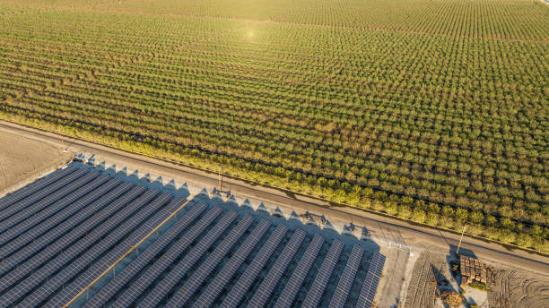

Explore the Agrivoltaic Dataset: Dive into real data comparing harvests under solar panels and open-sun farming.

The Agrivoltaic system offers a transformative solution for farming communities by providing a means to generate electricity without sacrificing agricultural productivity. The dataset showcases the effectivenesss of Solar PVs and also crop yield under solar PVs and in the open-sun on the same farm.
Data characteristics
[Auto-enriched from linked project resources]
Pilot agrivoltaic system data from Ghana comparing crop performance under solar PV panels versus open-sun farming. License: CC BY 4.0. Data Type: Tabular. 3 experimental plots: Plot 1 (control, no PV panels), Plot 2 (agrivoltaic with raised PV panels), Plot 3 (traditional ground-mounted PV on bare land). Plots 1 and 2 divided into 9 subplots each. Crops: tomatoes, chilli pepper, eggplant (3 replicates each). Includes PV panel energy generation data and crop performance data. Total size: ~4.3 MB. Maintained by the Responsible AI Lab.
Source: https://www.kaggle.com/datasets/responsibleailab/agrivoltaic-dataset-ghana
Model characteristics
[Auto-enriched from linked project resources]
Compare crop yields (tomatoes, chilli pepper, eggplant) under agrivoltaic panels versus open-sun control plots. The dataset provides side-by-side energy generation and harvest data from 3 plots with 9 subplots each, enabling analysis of whether raised solar PV panels affect crop productivity. Input: plot-level crop and energy measurements. Output: comparative yield and energy performance across agrivoltaic and control conditions.
Source: https://www.kaggle.com/datasets/responsibleailab/agrivoltaic-dataset-ghana
How to use
[Auto-enriched from linked project resources]
This dataset is valuable for anyone evaluating the feasibility of agrivoltaic systems -- combining solar energy generation with crop production on the same land -- in tropical climates. It contains measurements from a pilot installation in Ghana comparing three setups: a traditional open-sun control field, an agrivoltaic system with raised solar panels over crops, and a conventional ground-mounted solar installation on bare land.
You can use this data to directly compare crop yields (tomatoes, chili pepper, and eggplant) under solar panels against open-sun farming, and to assess energy output from different panel configurations. The experimental design includes three replicates per crop across two growing plots (control and agrivoltaic), allowing for statistical analysis of yield differences. This makes the dataset suitable for informing feasibility assessments and investment decisions around dual-use land strategies in similar climatic zones.
Development practitioners and policymakers can draw on these results to evaluate whether agrivoltaic systems offer a practical path to addressing both food security and clean energy access simultaneously. Researchers can extend this work by replicating the experimental design with different crop varieties, panel heights, or spacing configurations, or by combining the data with economic models to assess the financial viability of agrivoltaic installations at scale.
Cost and resources: The dataset itself is small (approximately 4.3 MB) and freely available on Kaggle under a CC BY 4.0 license. A free Kaggle account is required for download.
Source: https://www.kaggle.com/datasets/responsibleailab/agrivoltaic-dataset-ghana
Datasets
About
Powered by / Provided by: Kwame Nkrumah University of Science and Technology (KNUST), Responsible AI Lab (https://rail.knust.edu.gh/)
Catalyzed by: FAIR Forward - AI for All (https://www.bmz-digital.global/en/overview-of-initiatives/fair-forward/), GIZ
Financed by: BMZ (https://www.bmz-digital.global/en/digital-transformation-and-development-cooperation/)
Authors: Elikplim Sabblah
Contact: RAIL - KNUST (rail@knust.edu.gh)